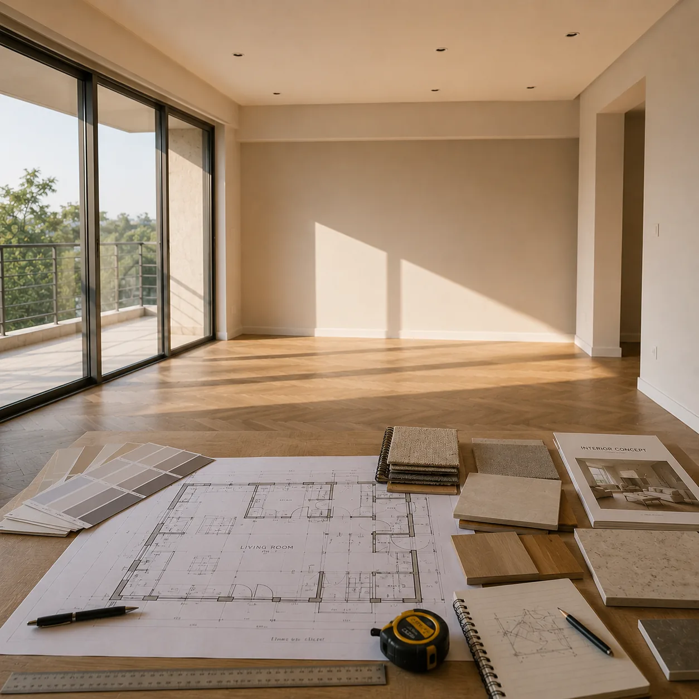

selected work
Sheet A-101 — index of plates

01The Earth HouseResidence · 2025

02AaranyaResidence · 2024
Since 2013, Radhe Studio has brought together architects, makers and engineers who read a site before they draw a line.

We guide each project with clarity, care and close collaboration — from the first conversation through to completion.
Contact us →